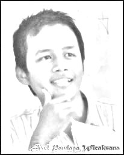

axel pandaga w
110533430577
PTI off C
TENTANG AXEL
Biodata
- Nama : Axel Pandaga W
- TTL : Blitar, 18 Desember 1993
- Jenis Kelamin : Laki-Laki
- Hoby : membaca
- Ayah : Agus Priyono
- Ibu : Atik Isnaeni
- Saudara : Reza Ayu Kurniasari
- satu
- dua
Riwayat Pendidikan
- SD : SDN Kesamben 05
- SMP : SMPN 1 Kesamben
- SMA : SMAN 1 Talun
- Pendidikan Tinggi : Universitas Negeri Malang
- Fakultas : Teknik
Riwayat Organisasi
- Organisasi SD :
- Organisasi SMP : MIPA club, tenis meja
- Organisasi SMA : Jurnalis, Pencak Silat
Prestasi Yang Pernah Diraih
- SD :
- SMP : -
- SMA : -
| Buku Favorit |
Klub SepakBola Favorit |
| The Da Vinci Code |
Borussia Dortmund |
| Stay Hungry, Stay Fool |
Kesamben FC |

Powered By :